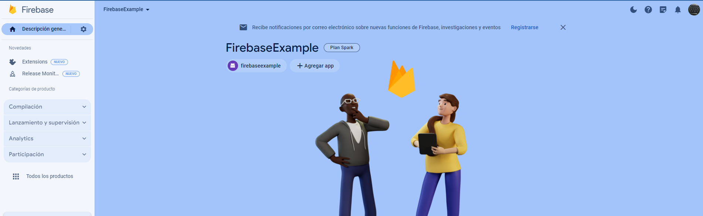
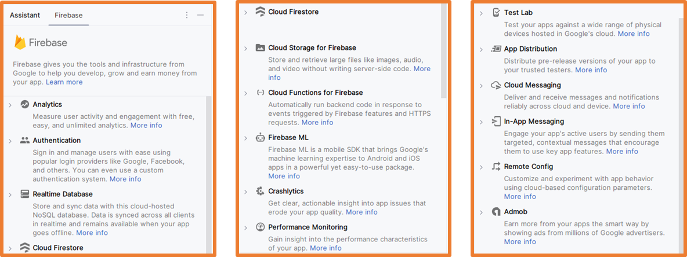
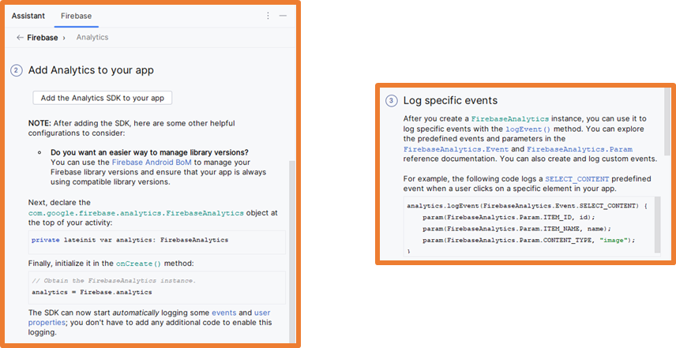
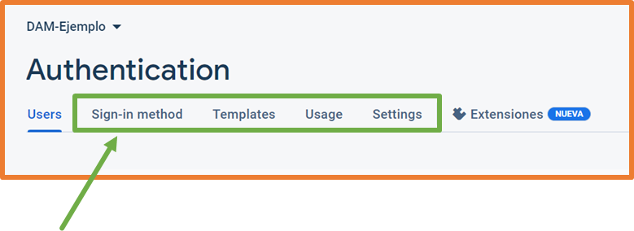
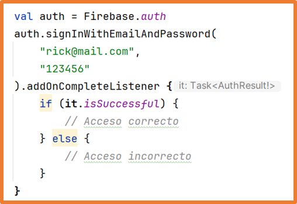
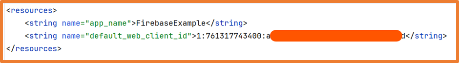
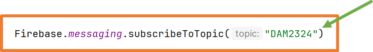

En el apartado de documentación se puede encontrar todo lo necesario para la integración de Firebase en una aplicación.
Si una aplicación va a hacer uso de Firebase debe tener permisos de acceso a internet en el archivo del AndroidManifest.xmlmanifest → AndroidManifest.xml con la siguiente línea:
En esta unidad se van a ver ejemplos de los siguientes servicios de Firebase:
Autenticación.
Notificaciones Push.
Crashlytics.
Configuración remota.
Bases de datos.
Descarga de responsabilidad (Disclaimer)
Firebase es una plataforma viva que va cambiando adaptándose a las necesidades de cada momento.
También va introduciendo nuevos mecanismos y tecnologías para su uso.
Por ello, en este documento se encuentran pequeñas muestras de cómo usar algunos de sus servicios. Estas pequeñas muestras pueden no estar actualizadas y pueden no mostrar todas las capacidades de la plataforma.
Si se quiere aprender más sobre Firebase se recomienda navegar por su documentación y ejemplos.
Acceso a Firebase
Para acceder a Firebase se debe utilizar una cuenta de Google para iniciar sesión y a continuación se debe ir a la consola.
Una vez se ha accedido a la consola se debe crear un nuevo proyecto siguiendo las instrucciones.
Para crear un proyecto se le debe dar nombre que no exista previamente (la plataforma avisará en ese caso),
en el siguiente paso se pregunta sobre el uso de Google Analytics y por último se debe crear/elegir una cuenta para Google Analytics.
Una vez finalizada la creación del proyecto se tendrá disponible la consola
Integración de Firebase en la aplicación
Tras crear un proyecto en Android Studio para integrar Firebase a la aplicación
se debe ir a la consola del proyecto de Firebase y seleccionar el tipo de aplicación.
La integración de Firebase en la aplicación consta de varios pasos.
El primero consiste en registrar la aplicación:
Nombre del paquete.
Alias de la app (nombre de la app).
Certificado SHA-1.
Una buena práctica es añadir el nombre del proyecto en el elemento package del manifiesto del proyecto de Android Studio:
Para obtener la firma SHA-1 (huella digital)
se puede ejecutar el siguiente comando desde la consola de gradle: gradle signingReport
Al ejecutar el comando, en la pestaña Run se obtendrán las diferentes claves de firma:
Tras conseguir la firma SHA-1 desde Android Studio se debe volver a configurar que se ejecute la aplicación.
Si no se realiza este cambio, al pulsar el botón "Play" se volverá a ejecutar el comando gradle anterior.
Si se añade el gradle al path del sistema también se podrá ejecutar el comando
gradle signingReport desde la terminal del sistema o de Android Studio.
El siguiente paso consiste en descargar desde firebase console el archivo de configuración y añadirlo al proyecto Android Studio.
Tal como nos indica el asistente se debe descargar en la raíz del proyecto.
En el siguiente paso se debe añadir en build.gradle.kts (Project) la dependencia de Firebase .
También se debe añadir en build.gradle.kts (Module) la dependencia de Firebase .
En este punto se debe sincronizar para que descargue las dependencias.
Una vez configurada la integración ya se podrá consultar la aplicación en la consola de Firebase.
Aplicación ya integrada con el proyecto de Firebase.

Desde Android Studio hay disponible una opción: Menú → Tools → Firebase
Mediante esta opción se pueden configurar el proyecto para el uso de Firebase de manera automática.
Estas opciones abren flujos de trabajo automáticos entre Android Studio y la aplicación web Firebase.
En algunas opciones se deberá completar la configuración de manera manual, como por ejemplo, el añadir la clave SHA-1 en la aplicación web de Firebase.
Estando ya la aplicación ingtgrada con Firebase como se ha indicado anteriormente:
Al pulsar en una opción no configurada aún:
Aunque se puede usar este asistente, los ejemplos de clase se realizarán de manera manual para comprender todos los pasos que hay que realizar.

El asistente de Firebase integrado en Android Studio ofrece ejemplos de recopilación de datos:

Analytics
Al integrar la aplicación con Firebase, se añade la dependencia para el análisis de datos:
De esta manera la aplicación enviará a Firebase todos los datos necesarios para poder calcular las diferentes métricas de análisis:
Desde el código de la aplicación se pueden enviar eventos personalizados al sistema Analytics.
//Creación instancia de FirebaseAnalytics
val analytics = Firebase.analytics
analytics.logEvent(
name = "Configuration",
block = {
param("Configuration", "Integración con Firebase completada")
param("Main_Activity", "Cargada la pantalla principal")
}
)
Un evento personalizado debe tener un nombre
y un bloque de datos que sean pares clave-valor (al menos un par clave-valor).
Con el código anterior se puede forzar el envío de eventos existentes y el uso de nombres de parámetros existentes.
Para ello se usa la clase FirebaseAnalytics, por ejemplo para enviar la pantalla a la que se accede:
FirebaseAnalytics.Event.SCREEN_VIEW
Según la documentación de Firebase desde la integración de la aplicación y la generación de los eventos, pueden pasar 24 horas hasta que se muestren en la plataforma.
Autenticación
Firebase ofrece diversas opciones de autenticación que permiten crear en una aplicación un sistema de registro y login de manera rápida.
Entre todas las opciones de autenticación se encuentran
Métodos nativos:
Correo electrónico
Número de teléfono
Anónimo
Métodos de terceros:
Google
Apple
Z (Twitter)
GitHub
…
Métodos personalizados:
Requieren del desarrollo propio del sistema de autenticación en alguna plataforma externa.
Mediante estos métodos de autenticación el desarrollador puede desentenderse de toda la gestión de almacenamiento de dichos datos.
Firebase ofrece diversas opciones de autenticación:
En la pestaña Users se pueden consultar los usuarios autenticados, evidentemente en este momento esta pestaña está vacía.
En el resto de pestañas se pueden configurar las diferentes opciones.

En este curso solo se verá dos de los sistemas de autenticación:
Correo electrónico y contraseña.
Google
Advertencia:
Se recomienda que todas las tareas de registro y autenticación se realicen en segundo plano mediante funciones suspendidas..
De esta forma la aplicación no se quedará bloqueada si el acceso a internet es lento o si ocurre algún problema en el proceso.
Autenticación por correo electrónico y contraseña
Se debe habilitar el proveedor de correo y contraseña en la consola de Firebase:
Una vez habilitado el proveedor de correo electrónico ya se podrá usar en los proyectos Android Studio.
Además de las dependencias añadidas anteriormente, es necesario añadir la siguiente dependencia en build.gradle.kts (Module)
y sincronizar.
A continuación, se deben diseñar las diferentes pantallas necesarias para poder registrarse y hacer login en la aplicación.
Registro de usuario
Tras obtener los datos de registro del usuario desde los campos de la aplicación,
para registrar al usuario en el sistema se debe usar el siguiente método pasándole como parámetros el usuario y
la contraseña de al menos 6 caracteres (en el ejemplo se usan literales).
Se puede añadir el método addOnCompleteListener
que se ejecutará al completar el registro para conocer si el registro ha sido correcto o no.
Por ejemplo, será incorrecto si el email ya está registrado.
Una vez registrado el usuario se podrá consultar en la consola de Firebase:
Inicio de sesión
Tras obtener los datos de acceso (login) del usuario desde los campos de la aplicación,
para comprobar si las credenciales son correctas se debe usar el siguiente método pasándole como parámetros el
usuario y la contraseña (en el ejemplo se usan literales).
Se puede añadir el método addOnCompleteListener
que se ejecutará al completar el inicio de sesión para conocer si ha sido correcto o no.

Acceso a los datos del usuario registrado
Una vez que el usuario se ha registrado con éxito, se puede utilizar la variable auth creada para acceder a sus datos:
Y también para para modificarlos:
Cerrar sesión
Para cerrar la sesión del usuario se debe usar el método signOut sobre la variable auth creada.
Autenticación con una cuenta de Google
La autenticación de Firebase con Google permite tres opciones:
Utilizar las credenciales ya almacenadas en el dispositivo.
Añadir unas credenciales nuevas de un correo ya existente.
Añadir unas credenciales nuevas a partir de un nuevo registro en Google.
Cuando se utiliza la autenticación de Firebase con Google, se abrirá una ventana nueva en el dispositivo en la que se deberá elegir una de estas opciones.
Se debe habilitar el proveedor de Google en la consola de Firebase
Tras habilitar el proveedor de Google se debe volver a descargar el archivo google-services.json
desde la configuración del proyecto de Firebase y sustituirlo en el proyecto de Android Studio
Una vez habilitado el proveedor de Google ya se podrá usar en los proyectos Android Studio.
Además de las dependencias añadidas anteriormente, es necesario añadir la siguiente dependencia en build.gradle.kts (Module) y sincronizar.
Para el funcionamiento de la autenticación con cuenta de Google es
necesario el identificador de la aplicación que se encuentra en el archivo google-services.json
y también en la consola de Firebase.
desde Android Studio desde Firebase Console
Es recomendable centralizar el identificador en el archivo strings.xml

A continuación, se muestra un ejemplo de cómo registrar al usuario utilizando las credenciales que ya tiene almacenadas en el dispositivo:
Una vez registrado el usuario se podrá consultar en la consola de Firebase:
Cuando se registra a un usuario con este método en la aplicación, el dispositivo recuerda este registro y lo mantiene autenticado aunque cierre la aplicación,
si no se realiza el cierre de sesión.
Para cerrar la sesión totalmente en la aplicación se debe usar el siguiente código:
Notificaciones
Firebase ofrece un sistema de notificaciones para las aplicaciones llamado Messaging.
Gracias a Messaging desde la consola de Firebase se pueden enviar notificaciones a los dispositivos que tengan la aplicación instalada.
Se debe añadir la siguiente dependencia en build.gradle.kts (Module) y sincronizar.
Además se debe añadir el siguiente código en el manifiesto
dentro de la etiqueta application para permitir las notificaciones en segundo plano:
Por último, se necesita crear la clase indicada en el manifiesto, para ello se crea una clase Kotlin nueva llamada MyFirebaseMessagingService.kt:
class MyFirebaseMessagingService: FirebaseMessagingService() {
override fun onNewToken(token:String){
super.onNewToken(token)
}
override fun onMessageReceived(remoteMessage: RemoteMessage) {
super.onMessageReceived(remoteMessage)
//Tratar la notificación FIREBASE recibida
remoteMessage.notification?.let { message ->
//A través de la variable message se puede acceder a toda la información de la notificación recibida
//Se indica que al pulsar la notificsación se navegue a la MainActivity de la aplicación
val intent = Intent(this, MainActivity::class.java).apply {
addFlags(FLAG_ACTIVITY_CLEAR_TOP)
}
//variable necesaria para que muestre la notifciación sin estar en el contexto de la aplicación
val pendingIntent = PendingIntent.getActivity(this, 0, intent, PendingIntent.FLAG_IMMUTABLE)
//Construcción de la notificación de Android
val channelID = "Firebase Example"
val channelName = "Example Notification"
val notificationBuilder = NotificationCompat.Builder(this, channelID)
.setContentTitle(message.title)
.setContentText(message.body)
.setPriority(NotificationCompat.PRIORITY_HIGH)
.setSmallIcon(R.drawable.ic_launcher_foreground)
.setAutoCancel(false)
.setContentIntent(pendingIntent)
//Optención del administrador de notificaciones del sistema Android
val manager = getSystemService(NOTIFICATION_SERVICE) as NotificationManager
//Si el dispositivo tienen una versión superior a OReo se debe crear un canal de notificaciones
// en caso contrario no es necesario
if(Build.VERSION.SDK_INT >= Build.VERSION_CODES.O){
val channel = NotificationChannel(channelID, channelName, NotificationManager.IMPORTANCE_HIGH)
manager.createNotificationChannel(channel)
}
//Se indica a Android que genere la notificación en el dispositivo.
//Al crear la notificación se necesita un identificador, en el ejemplo se genera de manera aleatoria
manager.notify(Random.nextInt(), notificationBuilder.build())
}
}
}
El método onNewToken servirá para recibir notificaciones en un dispositivo específico.
El método onMessageReceived servirá para:
Recibir notificaciones generales de Firebase.
Crear las notificaciones que se mostrarán en el dispositivo.
Enviar notificaciones desde la consola de Firebase
Para poder enviar notificaciones se debe crear una campaña desde la consola de Firebase:
Se puede enviar una notificación push a todos los dispositivos con la aplicación instalada.
Consola Firebase Dispositivo Logcat
Notificaciones Push Generales
El ejemplo anterior funciona para dispositivos con las versiones de Android inferiores a la 13.
A partir de la versión 13 el usuario debe otorgar explícitamente permisos de recepción de notificaciones en tiempo de ejecución.
Para implementar esto se deben realizar los siguientes cambios al código.
Se necesita crear una configuración a nivel de aplicación para las notificaciones,
para ello se crea la clase AndroidFirebaseApp en un archivo llamado AndroidFirebaseApp.kt:
class AndroidFirebaseApp: Application() {
override fun onCreate() {
super.onCreate()
val channelID = "FirebaseExample"
val channelName = "Example notification"
val manager = getSystemService(NOTIFICATION_SERVICE) as NotificationManager
if(Build.VERSION.SDK_INT >= Build.VERSION_CODES.O){
val channel = NotificationChannel(channelID, channelName, NotificationManager.IMPORTANCE_HIGH)
manager.createNotificationChannel(channel)
}
}
}
En el manifiesto se añaden los permisos para las notificaciones y se registra la clase anterior:
La documentación de Firebase aconseja añadir al manifiesto dentro de la etiqueta application el siguiente código para unificar la apariencia de las notificaciones:
Se deberán indicar los recursos correctos para la aplicación: icono existente en la carpeta drawable y color y nombre de canal como valores centralizados.
Es habitual pedir los permisos al iniciar la aplicación, en la clase MainActivity se debe añadir:
Al ejecutar la aplicación si no se han otorgado los permisos, aparecerá un mensaje como el siguiente:
Notificaciones Push a un único dispositivo
En la clase MyFirebaseMessaginService se encuentra el método onNewToken
que se ejecuta la primera vez que se utiliza la aplicación ya que se ha registrado esta clase como servicio en el manifiesto.
De esta manera se genera un token único para cada dispositivo en el que se instale la aplicación.
Este token se puede almacenar para posteriormente usarlo para enviar notificaciones a un dispositivo concreto.
Para enviar una notificación a un único dispositivo desde la consola de Firebase,
al crear una nueva campaña se debe elegir "Enviar mensaje de prueba" y en la ventana que aparece se debe añadir el token:
En una aplicación real cada token se debería almacenar en una preferencia y cuando el usuario se autentifique en la aplicación se debería guardar el token junto a sus datos.
De esta manera con alguna aplicación externa se podrían seleccionar todos los usuarios que se quiera y enviar notificaciones directamente a ellos mediante su token.
Esta funcionalidad es más avanzada y no se verá en este curso.
Notificaciones Push por temas
Es posible enviar notificaciones push solo a determinados dispositivos haciendo uso de los temas (topics).
Para ello es necesario que los dispositivos estén suscritos a un tema, para ello en el código de la aplicación se debe añadir lo siguiente:

Se puede usar la técnica que se quiera para crear los temas, por ejemplo, detectar la versión de Android instalada, la ubicación del dispositivo…
A la hora de crear la campaña desde Firebase se debe elegir la opción Tema:
Notificaciones In-App
Se puede enviar una notificación In-App (dentro de la aplicación) directamente a todos los dispositivos con la aplicación instalada.
Para ahorrar recursos Firebase solo recupera una vez al día los mensajes desde el servidor para las notificaciones In-App.
Se debe añadir las siguientes dependencias en build.gradle.kts (Module)S y sincronizar.
Desde la consola de Firebase se debe elegir la opción adecuada dependiendo de si ya se ha iniciado una campaña o no.
Según la documentación:
"Para ahorrar energía, Firebase In-App Messaging solo recupera mensajes del servidor una vez al día.
Eso puede dificultar las pruebas, por lo que Firebase console te permite especificar un dispositivo de prueba que muestra mensajes a pedido."
Para que funcionen correctamente las notificaciones In-App se deberá dar permiso al proyecto desde Google Cloud iniciando sesión con la misma cuenta que se utiliza en
la consola de Firebase.
Al crear una notificación desde Firebase se puede añadir datos extra con el formato clave-valor:
Esta información se recibe junto con la notificación.
En el método donde se trata la notificación se pueden recuperar los datos extra enviados en la notificación.
Si la aplicación está abierta se podrán usar los datos directamente.
Si la aplicación está cerrada, se pueden añadir los datos recibidos a la notificación para cuando se abra la aplicación al pulsar la notificación estén disponibles esos datos:
MyFirebaseMessagingService.kt MainActivity.kt
Recibir datos en la notificación se puede utilizar por ejemplo para:
Dependiendo de un valor recibido se podría navegar a una pantalla u otra de la aplicación.
Dependiendo de los valores recibidos se pueden mostrar unos botones u otros en la notificación.
Cualquier otra funcionalidad que se pueda necesitar.
…
Crashlytics
Crashlytics es una herramienta que permite obtener información y
estadísticas de los errores producidos durante la ejecución de la aplicación
Al pulsar el botón Agregar SDK aparecen las instrucciones para añadir Crashlytics a la aplicación.
Añadir en build.gradle.kts (Project):
Al pulsar el botón Agregar SDK aparecen las instrucciones para añadir Crashlytics a la aplicación.
Añadir en build.gradle.kts (Module):
Al pulsar el botón Agregar SDK aparecen las instrucciones para añadir Crashlytics a la aplicación.
Para finalizar la configuración de Crashlytics se debe iniciar la aplicación y forzar un error.
De esta manera en la consola de Firebase ya se podrán consultar todos los informes de error que se produzcan.
Una manera de forzar un error es, como ya sabemos, lanzar una excepción:
En la consola de Firebase Crashlytics se pueden ver todos los errores producidos.
Incluso se indica el archivo y la línea donde se produjo el fallo.
Si se pulsa en un error se mostrará más información del mismo,
pudiendo ver incluso la pila de errores generados tal y como se pueden observar en Android Studio.
Se puede enviar información extra cuando se utiliza Crashlytics:
Se pueden añadir tantos pares clave-valor como se quiera usando tantas veces como se quiera el método setCustomKey
o todos de golpe usando el método setCustomKeys.
Configuración remota
Generalmente cuando se realizan cambios en una aplicación móvil hay que desplegar una nueva versión
de la aplicación en la tienda de aplicaciones.
Firebase ofrece la herramienta Remote Config mediante la cual desde la consola de Firebase se podrán crear parámetros
y posteriormente actualizar sus parámetros. De esta manera, consultando los parámetros desde la aplicación se podrán realizar cambios en la misma.
Gracias a Remote Config, por ejemplo, entre otras tareas se podrá cambiar el texto de un elemento, decidir si un elemento se debe mostrar o no…
Las configuraciones permitidas serán pares clave-valor.
Ejemplo: mostrar/ocultar botón
Tras realizar cambios en los parámetros creados en Remote Config
se debe pulsar el botón Publicar cambios para que la aplicación acceda a los cambios realizados.
Para poder acceder desde la aplicación a la configuración creada en Remote Config:
Se debe añadir en build.gradle.kts (Module):
Se debe acceder a la configuración mediante los métodos de la clase FirebaseRemoteConfig
Dependiendo del valor almacenado en Firebase Remote Config se mostrará o no el botón de registro con Google.
Dependiendo del valor almacenado en Firebase Remote Config se mostrará o no el botón de registro con Google.
Si existen varios parámetros configurados en Remote Config a la hora de crear los valores por defecto se deben añadir al map todas las claves:
Cuando se crean los pares clave-valor en Remote Config se puede marcar la opción "Usar la configuración predeterminada en la app".
De esta manera se podrá descargar un archivo xml con dicha configuración y así evitar crear a mano el mapa con los valores por defecto.
Se debe descargar el archivo xml desde Remote Congif de Firebase:
Y posteriormente añadir el archivo xml a la carpeta res/xml y usarlo en el método setDefaultsAsync:
Bases de datos
Firebase ofrece dos herramientas para el uso de bases de datos, las dos opciones implementan bases de datos NoSQL (no relacionales).
Realtime Database:
Versión clásica de la herramienta.
Cada base de datos es un archivo con JSON.
El acceso a los datos puede ser lento cuando el volumen de datos es alto.
Firestore Database:
Versión optimizada de Realtime Database.
Almacena los datos en varios archivos JSON repartidos en Colecciones, documentos y datos.
A su vez cada elemento dentro puede contener cualquiera de los demás (un dato puede ser una colección).
En el siguiente ejemplo se va a utilizar la versión Realtime:
Al crear la base de datos se debe seleccionar la ubicación y las reglas de seguridad.
Las reglas de seguridad indican si el usuario debe estar registrado en la aplicación con Firebase para poder hacer uso de la base de datos.
En este caso se elegirá el modo de prueba pero posteriormente se pueden cambiar.
En la documentación
e puede encontrar más información sobre las reglas de seguridad.
La primera base de datos se crea con el nombre por defecto en base al proyecto de Firebase:
Para las siguientes habrá que indicar un nombre:
Para realizar los ejemplos siguientes es posible que sea necesario cambiar las reglas de seguridad a true
(modo de prueba: el usuario no está registrado en la aplicación):
En esta ocasión se iniciará la base de datos importando los datos desde un archivo en formato JSON llamado usuarios.json.
Una vez importado el archivo se podrán ver los datos en la consola:
Para representar estos datos en la aplicación se necesita una data class llamada User en un archivo llamado User.kt:
La propiedad key servirá para almacenar la clave del registro, en el ejemplo sería el valor 0
El siguiente paso será añadir en build.gradle.kts (Module):
A continuación, desde el código se necesita un objeto de la clase FirebaseDatabase para poder acceder a la base de datos:
Si la conexión se va a realizar a una base de datos diferente a la de por defecto se debe indicar la ruta completa a la base de datos de Firebase:
Para poder usar la base de datos se necesita una referencia a la colección de datos.
Con la referencia a la colección se indica la colección donde se realizarán todas las acciones de lectura, guardado, modificación y borrado.
Si la colección no existe en Realtime Database, cuando se guarda el primer elemento en con esa referencia se creará la colección.
Añadir elementos a la colección
Para añadir elementos a la colección y que se almacenen en la base de datos se pueden usar dos métodos sobre la referencia a la base de datos:
child: se le debe indicar la clave del elemento a añadir
push: se asignará una clave aleatoria al elemento a añadir. Tras añadir el elemento se podrá recuperar la clave.
Si la clave no existe se almacena el elemento en la base de datos.
Si la clave ya existe se modifica el elemento en la base de datos.
Método Child Se puede usar el método push para obtener una clave aleatoria Método Push
Recuperar todos los datos una vez
Se debe usar el capturador de eventos addListenerForSingleValueEvent
y en él crear un objeto ValueEventListener con los métodos onDataChange y onCancelled:
El evento recupera toda la colección de datos almacenada en Realtime Database.
El evento solo se ejecuta una vez por lo que puede usarse al cargar la Activity (aplicación).
Recuperar todos los datos cada vez que se produce un cambio
Se debe usar el capturador de eventos addValueEventListener
y en él crear un objeto ValueEventListener con los métodos onDataChange y onCancelled:
El evento recupera toda la colección de datos almacenada en Realtime Database.
El evento se ejecuta la primera vez y cada vez que se produce un cambio en los datos
Obtener la clave de un elemento
Si se necesita la clave de un elemento, en cualquiera de los capturadores de eventos vistos anteriormente se puede obtener la clave:
En el ejemplo, se utiliza la clave para asignarla a la propiedad id del objeto User.
Recuperar un único objeto cuando se realiza una acción sobre él
Se debe utiliza el capturador de eventos método addChildEventListener
y en él crear los métodos onChildAdded, onChildChanged, onChildRemoved,
onChildMoved y onCancelled:
El evento recupera solo el elemento añadido/modificado/eliminado/movido.
El evento se ejecuta la primera vez y cada vez que se produce un cambio en los datos.
Eliminar un elemento
Para eliminar un elemento se necesita su clave:
Firestore Database
En el siguiente ejemplo se va a utilizar la versión Firestore:
Al crear la base de datos se debe elegir la ubicación donde se almacenarán los datos:
A continuación, se deben elegir las reglas de seguridad de la misma, en este caso se elegirá el modo de prueba
pero posteriormente se pueden cambiar.
Una vez creada la base de datos desde la consola de Firebase se pueden crear colecciones y documentos con los datos.
En el ejemplo se va a crear una colección, añadir, editar y eliminar datos desde el código de la aplicación.
El primer paso es añadir en build.gradle.kts (Module):
A continuación, en MainActivity se necesita un objeto de la clase FirebaseFirestore para poder acceder a la base de datos:
Almacenar datos
Para almacenar datos en la base de datos se utilizan anidados los métodos:
collection para indicar la colección de datos donde almacenar los datos.
document para indicar el nombre del documento donde guardar los datos que en el ejemplo será el mail introducido.
set para indicar mediante un map los pares clave-valor a almacenar.
Cada vez que se pulse el botón si no existe el email se creará un documento con los datos introducidos. Si el email existe se actualizarán los datos introducidos.
Los datos añadidos se almacenan de la siguiente manera, se crea una colección llamada users,
se utiliza como nombre del documento el correo electrónico introducido y dentro del documento se almacenan el resto de valores introducido:
Recuperar datos
Para recuperar datos de la base de datos se utiliza el método get de la siguiente manera:
Gracias a addOnSuccessListener se pueden realizar acciones si se consigue el documento indicado.
Las variables usadas en el código podrían ser las variables de estado usadas en componentes Text para que se rellenen al conseguir los datos de la base de datos.
recuperar todos los datos de una colección
Para recuperar todos los datos de una colección de la base de datos se utiliza el método get de la siguiente manera:
Eliminar datos
Para eliminar datos de la base de datos se utiliza el método delete sobre el objeto de la base de datos.